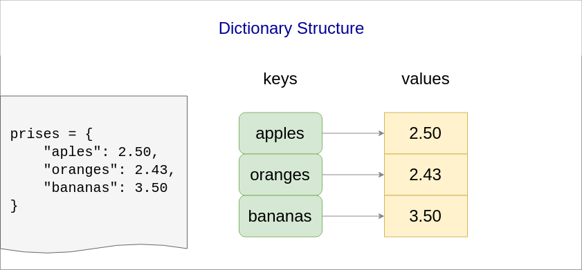

Keyboard shortcuts:
N/СпейсNext Slide
PPrevious Slide
OSlides Overview
ctrl+left clickZoom Element
If you want print version => add '
?print-pdf' at the end of slides URL (remove '#' fragment) and then print.
Like: https://wwwcourses.github.io/...CourseIntro.html?print-pdf
Python for Machine learning - Lecture 1, Part 4
Loops on Sequences. Dictionaries.
Created for

Iva E. Popova, 2024,

Loop on sequence
Syntax
for item in sequence:
# do something with item
### loop on list items:
for item in [1,2,3]:
print(item)
### loop on tuple items:
for item in (10, "December", 1985):
print(item)
### loop on string items:
for item in "byron":
print(item)
### loop on range items:
for item in range(1,3):
print(item)
Loop on indexes of sequence: C-style
- As we saw, Python doesn't have C-style for loop, but we can emulate it with:
user_name = "ivan"
for i in range(len(user_name)):
print("{} - {}".format(i, user_name[i]))
0 - i
1 - v
2 - a
3 - n
Note, that this is not the Pythonic way of looping on sequence by index.
Loop on indexes of sequence: Pythonic way
- To get the index and the item in a
forloop, we can also use the enumerate() built-in function:
for i,l in enumerate(user_name):
print("{} - {}".format(i, l))
0 - i
1 - v
2 - a
3 - n
More on lists
More on lists
Create list from sequence: list()
- With
list()function we can create a list from any sequence:
### list from tuple:
point3d = (4, 0, 3)
point3d_list = list(point3d)
print(point3d_list)
# [4, 0, 3]
### list from range:
digits = range(0, 10)
digits_list = list(digits)
print(digits_list)
# [0, 1, 2, 3, 4, 5, 6, 7, 8, 9]
### list from string:
user_name = "ada byron"
user_name_list = list(user_name)
print(user_name_list)
# ['a', 'd', 'a', ' ', 'b', 'y', 'r', 'o', 'n']
Other List Operations
fruits = ["apple", "orange", "strawberry"]
### Delete a list item by index
del fruits[1]
print(fruits)
# ['apple', 'strawberry']
Basic List Methods
### Create list of fruits:
fruits = ["apple", "banana", "strawberry"]
### Appends item the end of the list:
fruits.append("plum")
print(fruits)
# ['apple', 'banana', 'strawberry', 'plum']
### Insert item in specified position (by the index given as first parameter)
fruits.insert(2, "NEW")
print(fruits)
# ['apple', 'banana', 'NEW', 'strawberry', 'plum']
### Retrieve the item at the end and remove it from the list:
item = fruits.pop()
print(item, fruits)
# plum ['apple', 'banana', 'NEW', 'strawberry']
### Retrieve the item at the index given and remove it from the list:
item = fruits.pop(2)
print(item, fruits)
# NEW ['apple', 'banana', 'strawberry']
### Remove the first item from a list by the given value:
fruits.remove("banana")
print(fruits)
# ['apple', 'strawberry']
### Reverse the items of a list in place:
fruits.reverse()
print(fruits)
# ['strawberry', 'banana', 'apple']
For more - check the: python.org tutorial
Lists of lists
- A list item can be any data type, including list, tuples and so on.
### create list of lists:
matrix = [
[1,2,3],
[4,5,6],
[7,8,9],
]
### retrieve the first element from the first list:
print(matrix[0][0] )
# 1
### retrieve the last element from the first list:
print(matrix[0][-1])
# 3
### retrieve the first element from the last list:
print(matrix[-1][0])
# 7
### retrieve the last element from the last list:
print(matrix[-1][-1])
# 9
Slicing columns from "lists of lists" ?
- Python did not support syntax to slice columns from "multi dim" looking list
m = [
[1,2,3],
[4,5,6],
[7,8,9],
]
# trying to slice the second column ([2,5,8]):
print(m[:,1])
# TypeError: list indices must be integers or slices, not tuple
multi-dimensional arrays
- The package numpy contains powerful N-dimensional array objects and other numerical operations (we'll go into it in later topics).
- In order to use it, you need to install it first:
pip install numpy
import numpy
# lets create a python list
m = [
[1,2,3],
[4,5,6],
[7,8,9],
]
# create a numpy array from that list:
arr = numpy.array(m)
# now we can easily use numpy's multi-dim slicing:
print(arr[:,1])
#[2 5 8]
print(type(arr[:,1]))
List of tuples
### create list_of_tuples:
points = [
(1,2),
(3,4),
(5,6)
]
### retrieve the first element from the first tuple:
print(points[0][0])
# 1
### retrieve the last element from the first tuple:
print(points[0][-1])
# 2
### retrieve the first element from the last tuple:
print(points[-1][0])
# 5
### retrieve the last element from the last tuple:
print(points[-1][-1])
# 6
More on tuples
More on tuples
Create tuple from sequence: tuple()
- With
tuple()function we can create a tuple from any sequence:
### tuple from list:
fruits = ["apple", "banana", "strawberry", "banana", "orange"]
fruits_tuple = tuple(fruits)
print(fruits_tuple)
# ('apple', 'banana', 'strawberry', 'banana', 'orange'
### tuple from range:
digits = range(0, 10)
digits_tuple = tuple(digits)
print(digits_tuple)
# (0, 1, 2, 3, 4, 5, 6, 7, 8, 9)
### tuple from string:
user_name = "ada byron"
user_name_tuple = tuple(user_name)
print(user_name_tuple)
# ('a', 'd', 'a', ' ', 'b', 'y', 'r', 'o', 'n')
Change mutable item inside tuple? Yes!
- Tuple items can not be changed!
- If a tuple item is list - it will always be a list
- But, we can change the items inside a list!
Change mutable item inside tuple? - example
users = (
["Ivan", "Ivanov", 34],
["Maria", "Ivanova", 36],
["Asen", "Asenov", 20],
)
### try to change items inside a mutable tuple item:
users[0][2] = 100
print(users[0])
# ['Ivan', 'Ivanov', 100]
### try to change a tuple item:
users[0] = ["Petyr", "Petrov", 45]
# TypeError: 'tuple' object does not support item assignment
Dictionaries
Dictionaries
What is a Dictionary?
- An unordered collection of objects (values)
- Each value is associated with a unique key.
- A dictionary can be regarded as a collection of key:value pairs
- Dictionaries in Python are similar to associative arrays, hashes (hash tables) in other programming languages (PHP, Perl, Ruby)
Dictionary Structure
{kind=link}
Syntax
dictionary = {
'key1': value 1,
'key2': value 2,
'keyN': value N
}
- There is no order in dictionary! We can not say if 'key1' pair will be before 'key2' pair
- In fact, after Python 3.5 the dict objects preserves insertion order, but relying on that property is risky.
- If you need an ordered dict structure - use OrderedDict objects from collections module/dd>
- Keys must be immutable data type. Usually they are strings.
- Keys must be unique. If multiple "key:values" pairs with the same key exists, only the last one pair will be present in the dictionary
Dictionaries - examples
en_bg_dict = {
'apple': 'ябълка',
'orange':'портокал',
'banana':'банан'
}
print(en_bg_dict['apple'])
# ябълка
Dictionaries - unique keys example
en_bg_dict = {
'apple': 'ябълка',
'orange':'портокал',
'banana':'банан',
'apple':'манго',
}
print(en_bg_dict['apple'])
# манго
Retrieve item from dictionary
Dictionary values can be retrieved using their respective key in square bracket:
item = dictionary_name[key]
prices = {
"apples": 2.50,
"oranges": 2.43,
"bananas": 3.50
}
apples_price = prices['apples']
print("{:.2f}".format(apples_price))
# 2.50
oranges_price = prices['oranges']
print("{:.2f}".format(oranges_price))
# 2.43
Change item in a dictionary
dictionary_name[key] = new_value
### change apples prices:
prices['apples'] = 2.20
print(prices)
# {'apples': 2.2, 'oranges': 2.43, 'bananas': 3.5}
Add item in a dictionary
dictionary_name[new_key] = new_value
prices = {
"apples": 2.50,
"oranges": 2.43,
"bananas": 3.50
}
### add new key:value pair:
prices['plums'] = 4.30
print(prices)
# {'apples': 2.5, 'oranges': 2.43, 'bananas': 3.5, 'plums': 4.3}
Delete item from dictionary: del - operator
del dictionary[key]
- Deletes the key:value pair whit the given key
prices = {
"apples": 2.50,
"oranges": 2.43,
"bananas": 3.50
}
### just delete 'oranges' key:value pair:
del prices['oranges']
print(prices)
# {'apples': 2.5, 'bananas': 3.5}
Delete item from dictionary: pop()
pop(key[, default])
- If key is in the dictionary, remove it and return its value, else return default.
- If no key or default values are given a KeyError is raised.
prices = {
"apples": 2.50,
"oranges": 2.43,
"bananas": 3.50
}
### remove 'apples' key:value pair from the dictinary, and return its value
apples_price = prices.pop('apples')
print(apples_price, prices)
# 2.5 {'oranges': 2.43, 'bananas': 3.5}
apples_price = prices.pop('apples', 5.00)
print(apples_price)
# 5.0
Get all dictionary keys: keys()
- the
keys()method of a dictionary returns a dict view object of dictionary keys, which means that when the dictionary changes, the view reflects these changes.
prices = {
"apples": 2.50,
"oranges": 2.43,
"bananas": 3.50
}
fruits = prices.keys()
print(fruits)
# dict_keys(['apples', 'oranges', 'bananas'])
keys() - dynamic view example
prices = {
"apples": 2.50,
"oranges": 2.43,
"bananas": 3.50
}
# get prices keys view:
prices_keys = prices.keys()
print("before:", prices_keys)
# add new key-value pair:
prices["new_key"]="new value"
# check if prices_keys contains the new key
print("after:", prices_keys)
before: dict_keys(['bananas', 'oranges', 'apples'])
after: dict_keys(['new_key', 'bananas', 'oranges', 'apples'])
Get all dictionary values: values()
- the
values()method of a dictionary returns a dict view object dictionary values
prices = {
"apples": 2.50,
"oranges": 2.43,
"bananas": 3.50
}
price_list = prices.values()
print(price_list)
# dict_values([2.5, 2.43, 3.5])
values() - dynamic view example
prices = {
"apples": 2.50,
"oranges": 2.43,
"bananas": 3.50
}
# get prices values view:
prices_values = prices.values()
print("before:", prices_values)
# change a value:
prices["oranges"]=100
# check if prices_values reflects the change:
print("after:", prices_values)
before: dict_values([3.5, 2.5, 2.43])
after: dict_values([3.5, 2.5, 100])
Get all dictionary items (key-value pairs): items()
- the
items()method of a dictionary returns a dict view object of dictionary items, i.e. a view of key-value pairs
prices = {
"apples": 2.50,
"oranges": 2.43,
"bananas": 3.50
}
prices_items = prices.items()
print(prices_items)
dict_items([('bananas', 3.5), ('apples', 2.5), ('oranges', 2.43)])
items() - dynamic view example
prices = {
"apples": 2.50,
"oranges": 2.43,
"bananas": 3.50
}
# get prices items view:
prices_items = prices.items()
print("before:", prices_items)
# remove an item:
del prices["oranges"]
# check if prices_items reflects the change:
print("after:", prices_items)
before: dict_items([('apples', 2.5), ('oranges', 2.43), ('bananas', 3.5)])
after: dict_items([('apples', 2.5), ('bananas', 3.5)])
dict views in Python3 and Python2
- The
keys(),values()anditems()methods return dict view objects only in Python3. In Python2 they return lists. - If you need to convert a dict view object to a list in Python3, you may use the
list()method`
prices = {
"apples": 2.50,
"oranges": 2.43,
"bananas": 3.50
}
print(list(prices.keys()))
print(list(prices.values()))
print(list(prices.items()))
# Output
# ['apples', 'oranges', 'bananas']
# [2.5, 2.43, 3.5]
# [('apples', 2.5), ('oranges', 2.43), ('bananas', 3.5)]
Iterate over dictionary keys:
for key in dict_name:
# do something with a key
# this is equivalent to:
for key in dict_name.keys():
# do something with a key
prices = {
"apples": 2.50,
"oranges": 2.43,
"bananas": 3.50
}
for k in prices:
print(k)
bananas
apples
oranges
Iterate over dictionary values:
for value in dict_name.values():
# do something with a value
prices = {
"apples": 2.50,
"oranges": 2.43,
"bananas": 3.50
}
for v in prices.values():
print(v)
2.43
3.5
2.5
Iterate over keys and values
- This is the most often used and the most Pythonic construct for looping over dictionaries
for key, value in dict_name.items():
# do something with a key
# do something with a value
prices = {
"apples": 2.50,
"oranges": 2.43,
"bananas": 3.50
}
for fruit, price in prices.items():
print("{} - {}".format(fruit, price))
apples - 2.5
oranges - 2.43
bananas - 3.5
More on dictionaries
dictclass @python docs- Dictionary view objects @python docs
Exercises
task_best_students_scores.py
the task

- Represent the information given in student_scores table in appropriate data structure.
- From
student_scoresdata, create a new data structure namedbest_students_scores, storing the information (name and score) only for students with scores greater than 4.00 - Print out the names and scores from
best_students_scoresas shown:
Ivan - 5.00
Maria - 5.50
Georgy - 5.00
Hints
- In order to check if a value (i.e. "student score") is greater than 4.00 you can use next code
score = 4.55
if score>4.00:
# do something if True
# i.e. add student's name and score into best_students_scores
task_min_max_student_score.py
the task
- Using the same information as in previous task, i.e.
- Print out the name and score of the student with maximum score
- Print out the name and score of the student with minimum score

Maria - 5.5
Alex - 3.5
hints
- To find a min/max value from values, you can implement your own algorithm using only
ifstatement. - Or to use Python's built-in functions min() and max()
- You can use them on any sequence, like this:
- or on separate items, like this:
numbers = [2,3,1,5]
min_number = min(numbers)
max_number = max(numbers)
print(min_number)
print(max_number)
#OUTPUT
# 1
# 5
x = 2
y = 5
min_number = min(x,y)
max_number = max(x,y)
print(min_number)
print(max_number)
task_simple_word_index.py
the task
- Make a program which will counts the words frequency (the count) of a given text
apple and banana one apple one banana
a red apple and a green apple
a - 2
green - 1
banana - 2
and - 2
one - 2
red - 1
apple - 4
Hints
- For simplicity we will get the "words" as a space separated sequences in string.
- To get that list of words we can use the
str.split()method, as shown:
text = "some words delimited by spaces"
words_list = text.split()
print(words_list)
['some', 'words', 'delimited', 'by', 'spaces']
A more sophisticated output
- Display the words count as a table. Note that the first column width is equal to the length of the longest word
|apple | 4 |
|banana| 2 |
|one | 2 |
|a | 2 |
|and | 2 |
|green | 1 |
|red | 1 |
task_users_bills.py
the data
- A simplified data for telecom users are stored as two relational tables:
- Represent the data in appropriate data structures in order to:
- being able to add/remove records from each table
- find and print the name of the user with highest bill
- find and print the name of the user with lowest bill
id | name | number
---|---------|---------------
1 | "Maria" | "+39587111111"
2 | "Ivan" | "+39587222222"
3 | "Asen" | "+39587333333"
id | bill
---|---------
1 | 25.50
2 | 30.48
3 | 5.98
The user with highest bill - 30.48 is Ivan
The user with lowest bill - 5.98 is Asen